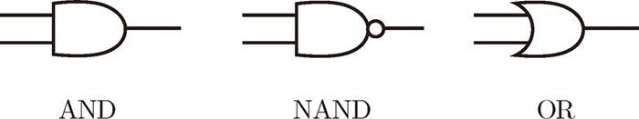
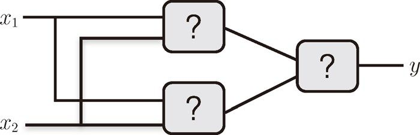
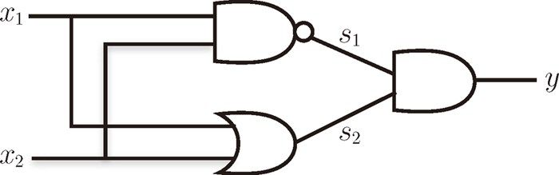
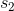
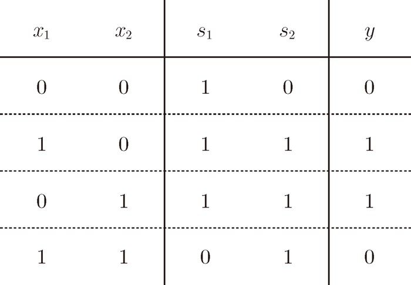
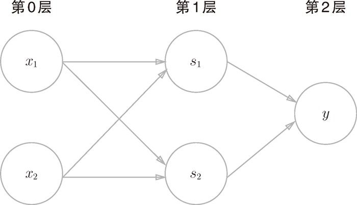

2.4 节讲到的感知机的局限性，严格地讲，应该是“单层感知机无法表示异或门”或者“单层感知机无法分离非线性空间”。接下来，我们将看到通过组合感知机（叠加层）就可以实现异或门。
2.4 节讲到的感知机的局限性，严格地讲，应该是“单层感知机无法表示异或门”或者“单层感知机无法分离非线性空间”。接下来，我们将看到通过组合感知机（叠加层）就可以实现异或门。
感知机不能表示异或门让人深感遗憾，但也无需悲观。实际上，感知机的绝妙之处在于它可以“叠加层”（通过叠加层来表示异或门是本节的要点）。这里，我们暂且不考虑叠加层具体是指什么，先从其他视角来思考一下异或门的问题。
异或门的制作方法有很多，其中之一就是组合我们前面做好的与门、与非门、或门进行配置。这里，与门、与非门、或门用图 2-9 中的符号表示。另外，图 2-9 中与非门前端的○表示反转输出的意思。

图 2-9 与门、与非门、或门的符号
那么，请思考一下，要实现异或门的话，需要如何配置与门、与非门和或门呢？这里给大家一个提示，用与门、与非门、或门代替图 2-10 中的各个“？”，就可以实现异或门。

图 2-10 将与门、与非门、或门代入到“？”中，就可以实现异或门！
异或门可以通过图 2-11 所示的配置来实现。这里， 和
和  表示输入信号，y 表示输出信号。 和 是与非门和或门的输入，而与非门和或门的输出则是与门的输入。
表示输入信号，y 表示输出信号。 和 是与非门和或门的输入，而与非门和或门的输出则是与门的输入。

图 2-11 通过组合与门、与非门、或门实现异或门
现在，我们来确认一下图 2-11 的配置是否真正实现了异或门。这里，把 作为与非门的输出，把  作为或门的输出，填入真值表中。结果如图 2-12 所示，观察 、、y，可以发现确实符合异或门的输出。

图 2-12 异或门的真值表
下面我们试着用 Python 来实现图 2-11 所示的异或门。使用之前定义的 AND 函数、NAND 函数、OR 函数，可以像下面这样（轻松地）实现。
def XOR(x1, x2):
s1 = NAND(x1, x2)
s2 = OR(x1, x2)
y = AND(s1, s2)
return y
这个 XOR 函数会输出预期的结果。
XOR(0, 0) # 输出0
XOR(1, 0) # 输出1
XOR(0, 1) # 输出1
XOR(1, 1) # 输出0
这样，异或门的实现就完成了。下面我们试着用感知机的表示方法（明确地显示神经元）来表示这个异或门，结果如图 2-13 所示。

图 2-13 用感知机表示异或门
如图 2-13 所示，异或门是一种多层结构的神经网络。这里，将最左边的一列称为第 0 层，中间的一列称为第 1 层，最右边的一列称为第 2 层。
图 2-13 所示的感知机与前面介绍的与门、或门的感知机（图 2-1）形状不同。实际上，与门、或门是单层感知机，而异或门是 2 层感知机。叠加了多层的感知机也称为多层感知机（multi-layered perceptron）。
图 2-13 中的感知机总共由 3 层构成，但是因为拥有权重的层实质上只有 2 层（第 0 层和第 1 层之间，第 1 层和第 2 层之间），所以称为“2 层感知机”。不过，有的文献认为图 2-13 的感知机是由 3 层构成的，因而将其称为“3 层感知机”。
在图 2-13 所示的 2 层感知机中，先在第 0 层和第 1 层的神经元之间进行信号的传送和接收，然后在第 1 层和第 2 层之间进行信号的传送和接收，具体如下所示。
- 第 0 层的两个神经元接收输入信号，并将信号发送至第 1 层的神经元。
- 第 1 层的神经元将信号发送至第 2 层的神经元，第 2 层的神经元输出 y。
这种 2 层感知机的运行过程可以比作流水线的组装作业。第 1 段（第 1 层）的工人对传送过来的零件进行加工，完成后再传送给第 2 段（第 2 层）的工人。第 2 层的工人对第 1 层的工人传过来的零件进行加工，完成这个零件后出货（输出）。
像这样，在异或门的感知机中，工人之间不断进行零件的传送。通过这样的结构（2 层结构），感知机得以实现异或门。这可以解释为“单层感知机无法表示的东西，通过增加一层就可以解决”。也就是说，通过叠加层（加深层），感知机能进行更加灵活的表示。